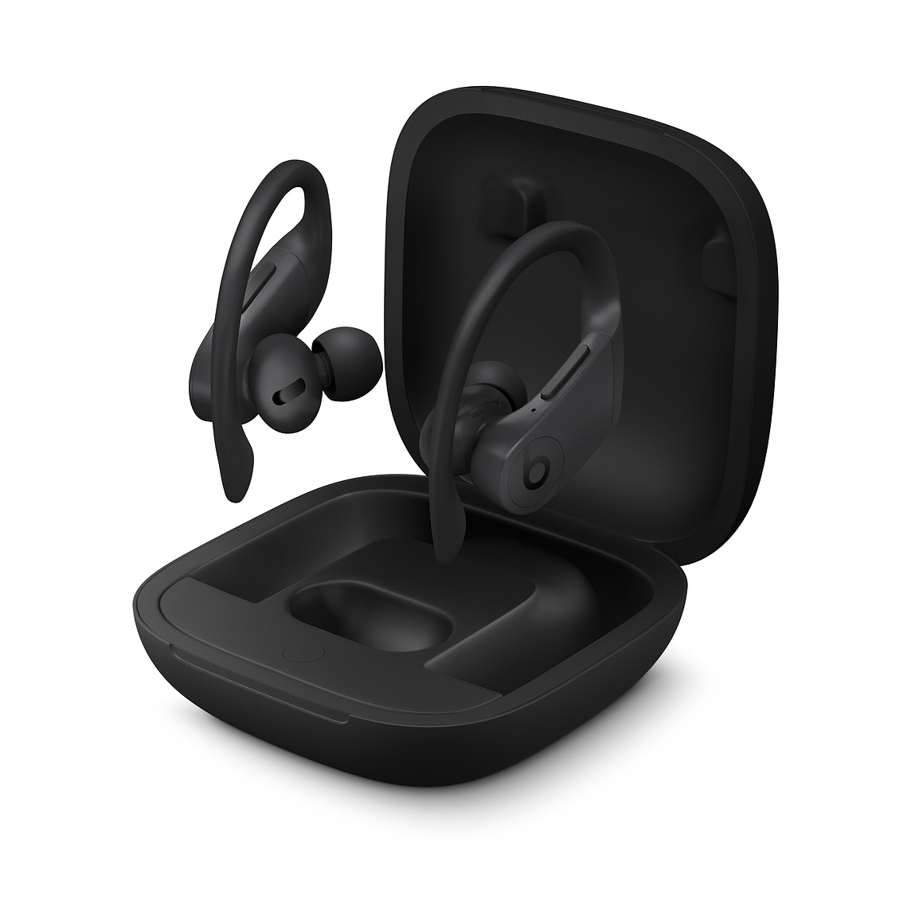
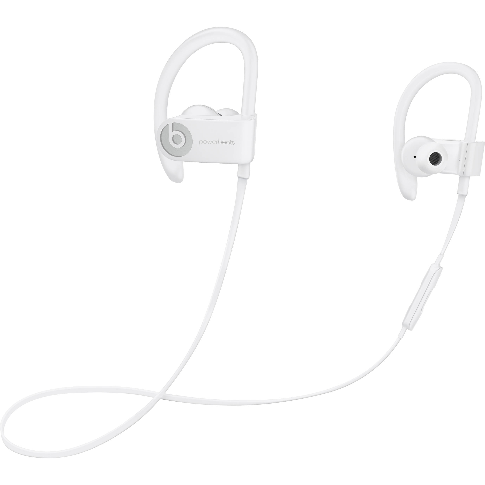
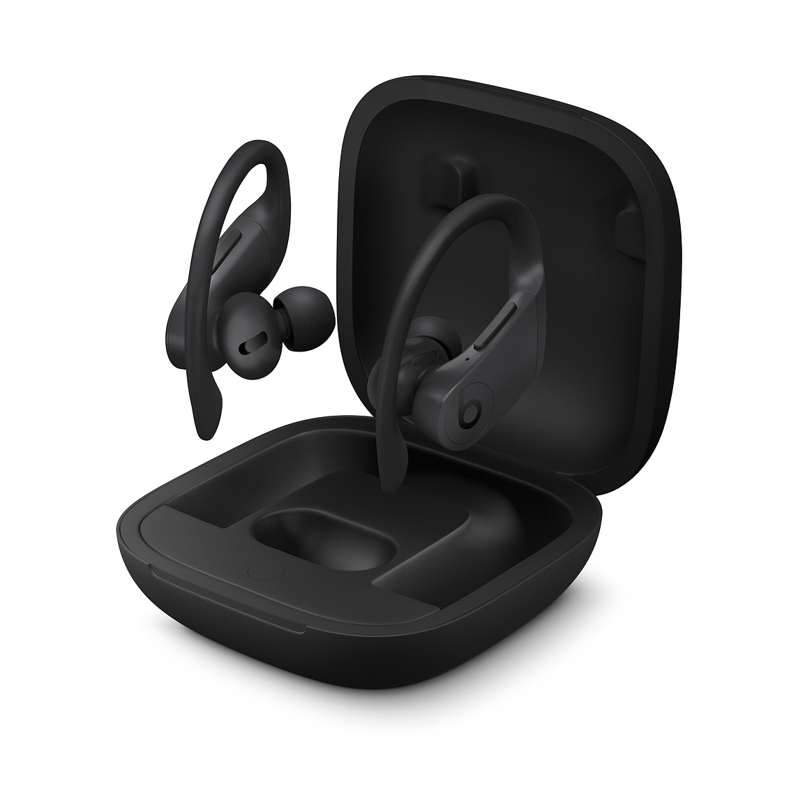
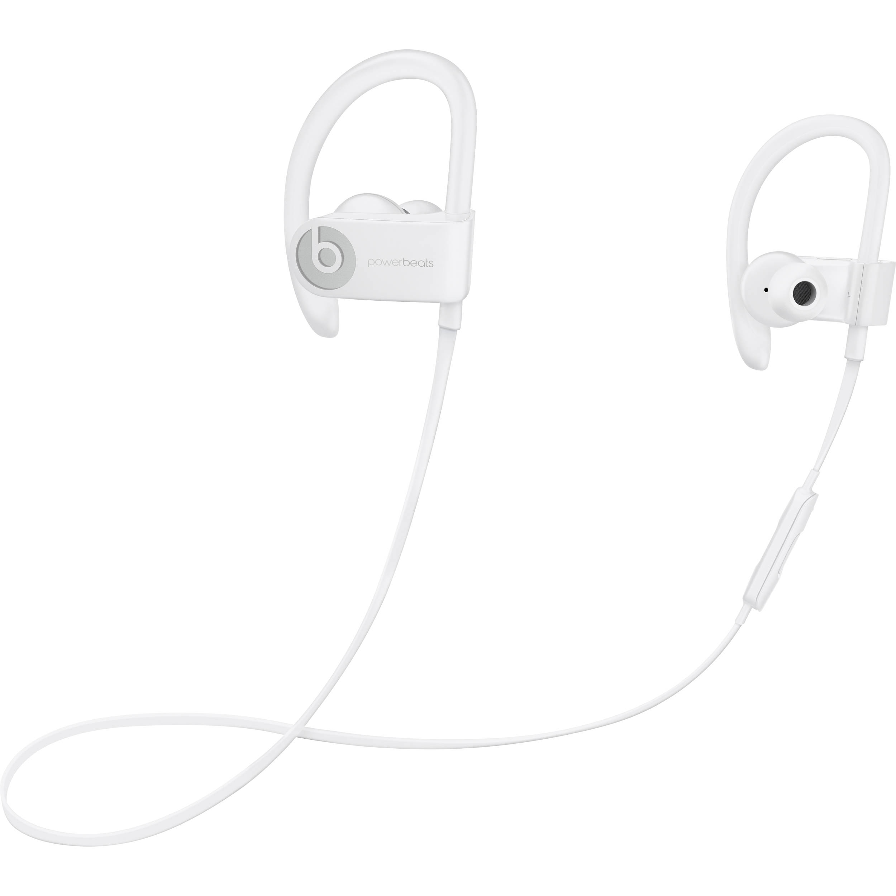
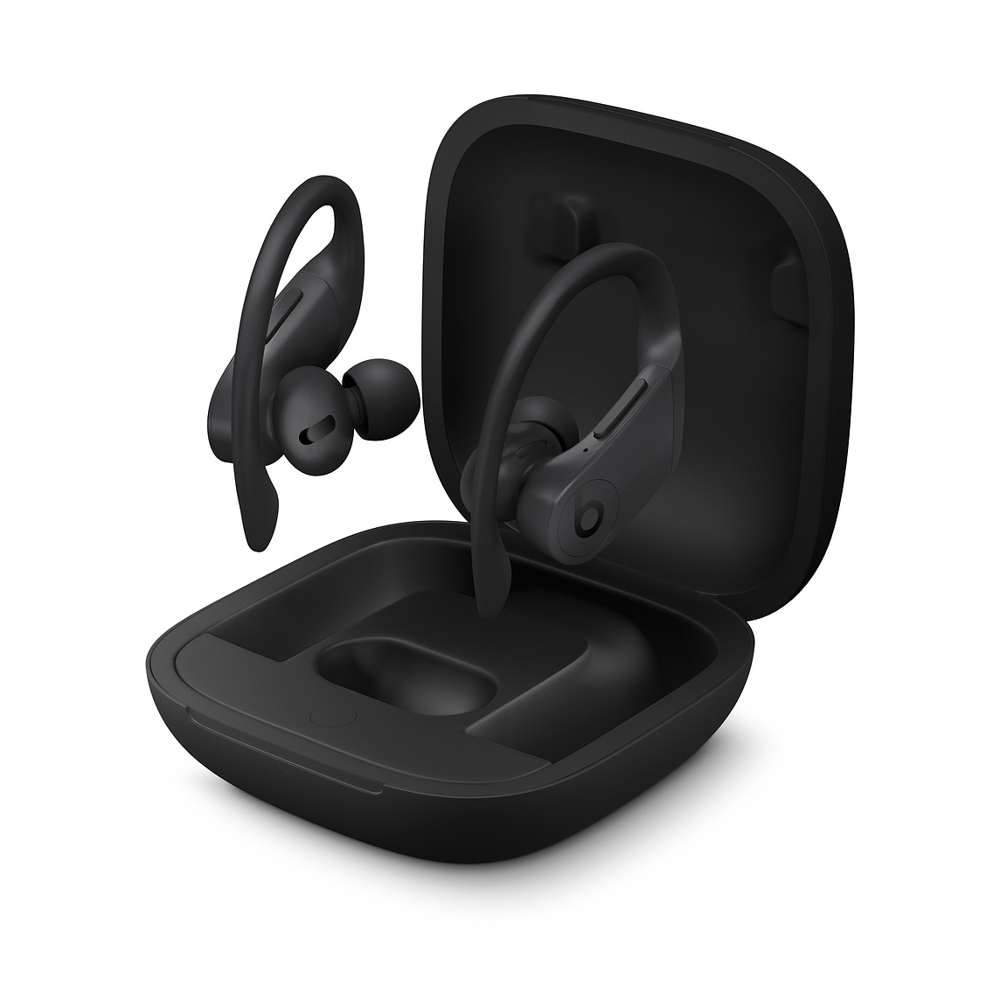
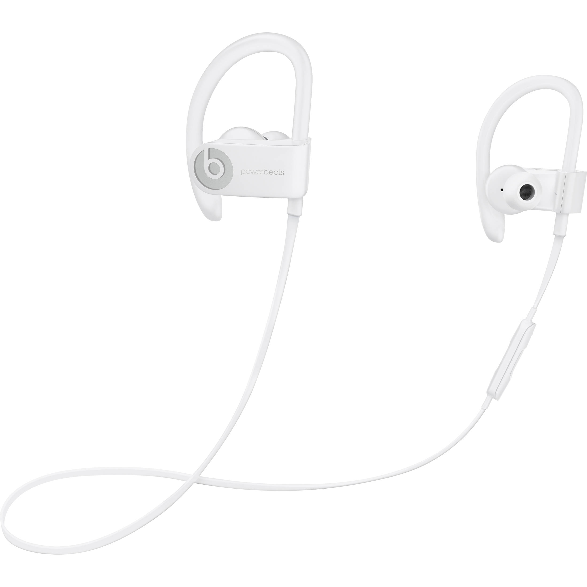

I call myself a tech-enthusiast since I own more tech products than the majority of most people.
I spend hours every day watching YouTube reviews of products on channels such as Marques Brownlee, UrAverageConsumer, TailosiveTech, FrontPageTech, Apple Insider, EverythingApplePro, and Austin Evans among others.


I have seen over 150 anime shows and movies since 2008. The majority of these shows have taught me different aspects of real life since they incorporated different aspects of real life problems and scenarios.
I started watching anime such as Digimon, Pokemon, and Yu-Gi-Oh when I was 11 years old. These shows encompassed many aspects of the real world while using fictional characters to advance complex plots. I was drawn to these shows and eventually started branching off into different genres of anime which created a never ending cycle that will never be broken. In my opinion, the best animes of all time in order are Attack on Titan, Parasyte the Maxim, Dragon Ball Z, Fate/Zero, Death Note, and Code Geass.


I have written two short novels that were bother self-published in 2017 through Amazon Kindle Publishing. These novels are titled "Depths of Time" and "Bonds of Time" and are about time travel, self-discovery, and mental health. I have another six hundred page novel titled "Detective Hawkeye: Ritual of Oronoco" that will be published in April 2021.